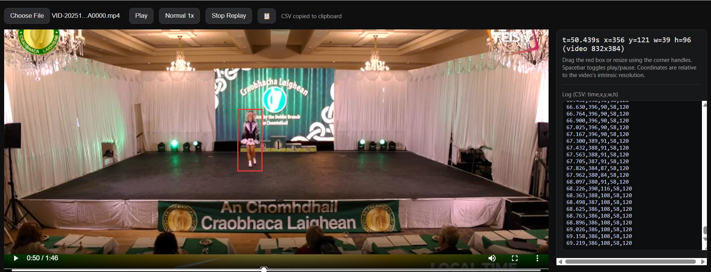

Collecting dancer coordinates from video
I have used this technique before to track a dumbbell during exercise. I got Open AI Codex to write a web page for me which played the video, overlaid a resizable red box which could be dragged during video play. The coordinates of the box are output multiple times per second and will be used to train a model.
This is a still from the collection process.

It is tricky to keep the box correctly aligned around the moving dancer even at lower playback speed, but I will go with what I have for now and come back to do this more accurately if that proves to be useful.
This is the prompt I used with Codex to get the first revision of the web page. I added a couple of refinements after this to allow slowmo, data copying and replay of the labels.
I want to view a video on a simple web page. the video is in this folder. Show the video in a large size. Overlay a red box that I can drag around the screen while the video is playing. As the video plays output the coordinates of the top left hand corner of the box along with the width and height. The width and height of the box should be adjustable. The video should be pausable. I am doing this to collect training data to build a machine learning model to track the dancer on the stage.